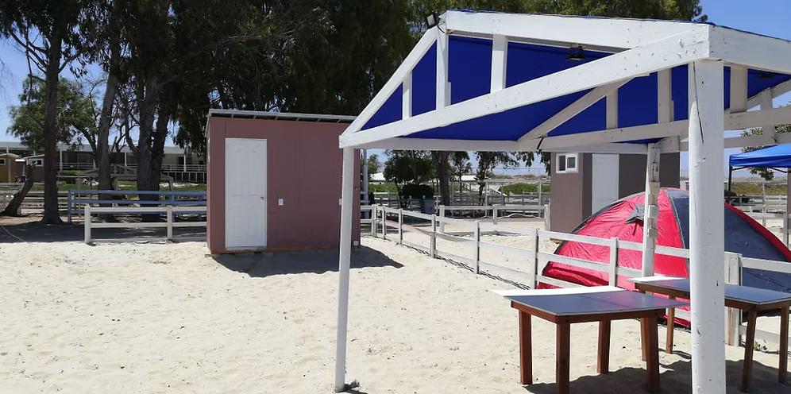

Sitio con baño privado
🚿 Baño privado
🏖️ Cerca del mar
👨👩👧👦 Hasta 6 personas
Una alternativa para disfrutar de mayor privacidad y comodidad durante tu estadía. Vive la experiencia de acampar junto al mar con tu propio baño.
Ver detalles del sitio →